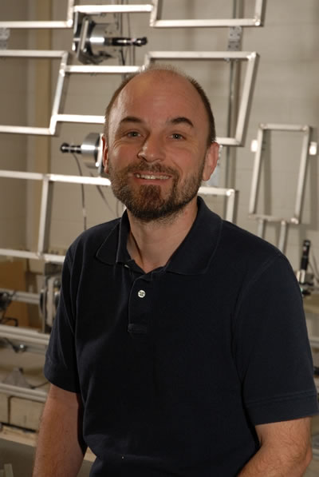
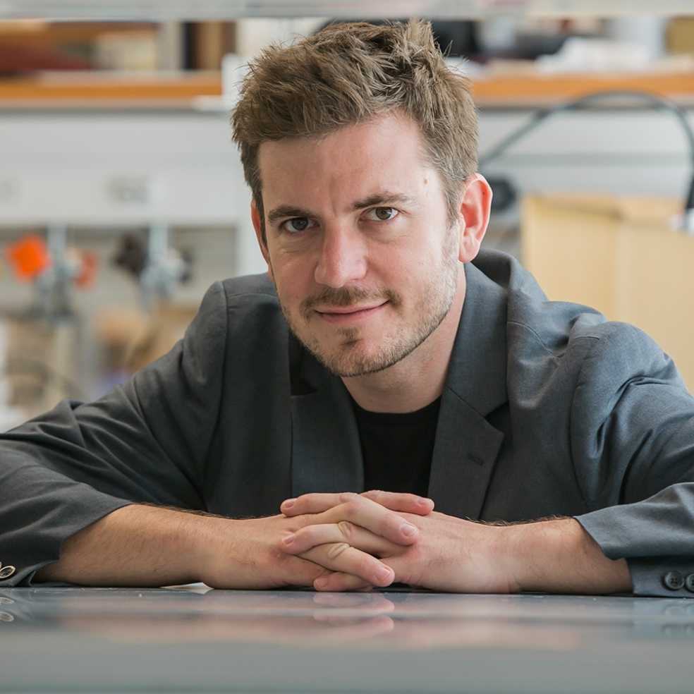
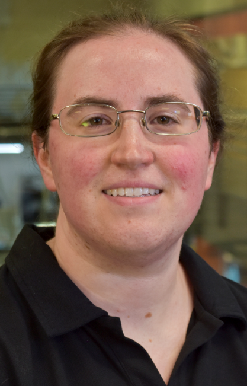

This is soft robotics podcast, brought by IEEE RAS soft robotics TC.
Soft Robotics Podcast
Bio-inspired Soft Robots for Healthcare, with Yong-Lae Park
In this episode, Yong-Lae Park is interviewed, Associate Professor at Seoul National University in South Korea, about the bio-inspired design and manufacture of soft robots and microrobots for healthcare. Park’s research goal is to analyze the design and dynamics of biological systems and transform them into robotic/mechatronic systems for human life. Some of the his projects include development of artificial skin sensors, soft Muscle Actuators, and wearable robots for human rehabilitation.
Towards using Micro and Nano Robots in the Human Body, with Peer Fischer
In this episode, Peer Fisher is interviewed, a Professor of Physical Chemistry at the University of Stuttgart and the Director of the Micro Nano and Molecular Systems Lab at the Max Planck Institute for Intelligent Systems. Fischer discusses micro robots that has been designed to move inside of environments similar to the human body called, “micro swimmers.” He talks about how they are fabricated, powered, and how they can move with light or “nano propellers.” Fischer also discusses simulating human tissue and the future of micro and nano robots, including how they could be a replacement for certain surgeries.
Growing Soft Robotics with Allison Oukmara
In this episode, Peer Fisher is interviewed, a Professor of Physical Chemistry at the University of Stuttgart and the Director of the Micro Nano and Molecular Systems Lab at the Max Planck Institute for Intelligent Systems. Fischer discusses micro robots that has been designed to move inside of environments similar to the human body called, “micro swimmers.” He talks about how they are fabricated, powered, and how they can move with light or “nano propellers.” Fischer also discusses simulating human tissue and the future of micro and nano robots, including how they could be a replacement for certain surgeries.
Continuum Robotics, with Ian Walker

In this episode, Peer Fisher is interviewed, a Professor of Physical Chemistry at the University of Stuttgart and the Director of the Micro Nano and Molecular Systems Lab at the Max Planck Institute for Intelligent Systems. Fischer discusses micro robots that has been designed to move inside of environments similar to the human body called, “micro swimmers.” He talks about how they are fabricated, powered, and how they can move with light or “nano propellers.” Fischer also discusses simulating human tissue and the future of micro and nano robots, including how they could be a replacement for certain surgeries.

In this episode, Peer Fisher is interviewed, a Professor of Physical Chemistry at the University of Stuttgart and the Director of the Micro Nano and Molecular Systems Lab at the Max Planck Institute for Intelligent Systems. Fischer discusses micro robots that has been designed to move inside of environments similar to the human body called, “micro swimmers.” He talks about how they are fabricated, powered, and how they can move with light or “nano propellers.” Fischer also discusses simulating human tissue and the future of micro and nano robots, including how they could be a replacement for certain surgeries.
In this episode, Peer Fisher is interviewed, a Professor of Physical Chemistry at the University of Stuttgart and the Director of the Micro Nano and Molecular Systems Lab at the Max Planck Institute for Intelligent Systems. Fischer discusses micro robots that has been designed to move inside of environments similar to the human body called, “micro swimmers.” He talks about how they are fabricated, powered, and how they can move with light or “nano propellers.” Fischer also discusses simulating human tissue and the future of micro and nano robots, including how they could be a replacement for certain surgeries.

In this episode, Gina Olson is interviewed, Gina Olson is a PhD Candidate in Robotics and Mechanical Engineering at Oregon State University. Her current work focuses on understanding and improving single- and multiple-actuator soft robotic systems for underwater applications. She is specifically interested in models formulated for design and novel fabrication techniques. Gina earned her Bachelor of Science in Mechanical Engineering from Rose-Hulman Institute of Technology in 2010, and her Master of Science in Aeronautical Engineering from California Institute of Technology in 2011. Prior to attending Oregon State University, Gina worked as a Technical Lead Engineer at Meggitt Polymers and Composites, designing and certifying engine seals for commercial passenger aircraft. .